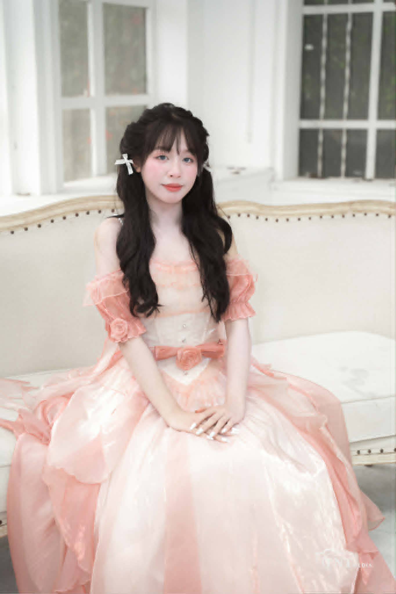

Nguyễn Thị Thùy Khuyên
Sinh viên năm nhất với định hướng nghiên cứu và phát triển giải pháp xử lý ảnh y tế, tích hợp trí tuệ nhân tạo vào chẩn đoán hình ảnh. Tư duy phân tích, tỉ mỉ và cam kết học thuật chuyên nghiệp.
🎯 Mục tiêu học thuật & nghề nghiệp
Phát triển chuyên sâu về kỹ thuật hình ảnh y khoa, ứng dụng AI trong phân tích X-quang, MRI.
Hướng đến vai trò kỹ sư hình ảnh lâm sàng hoặc chuyên gia nghiên cứu tại bệnh viện/viện công nghệ y sinh.
📁 Portfolio: 6 dự án nền tảng – Từ phần cứng đến liêm chính học thuật.

Dự án chuyên ngành
6 báo cáo học phần theo lộ trình Kỹ thuật Hình ảnh, phản ánh năng lực phân tích và ứng dụng công nghệ.
Tiến trình & Tổng kết
Bài 1 · Máy tính và thiết bị ngoại vi
Nền tảng phần cứng, tối ưu workstation xử lý ảnh DICOM.
Bài 2 · Khai thác dữ liệu và thông tin
Kỹ thuật trích xuất, làm sạch và phân tích metadata ảnh y khoa.
Bài 3 · Tổng quan về Trí tuệ nhân tạo
CNN, deep learning trong phân đoạn khối u và phát hiện bất thường.
Bài 4 · Giao tiếp & hợp tác trong môi trường số
Quy trình làm việc nhóm từ xa, quản lý dự án cho hệ thống PACS.
Bài 5 · Sáng tạo nội dung số
Xây dựng tài liệu trực quan, infographics hướng dẫn chụp cộng hưởng từ.
Bài 6 · An toàn & liêm chính học thuật
Bảo mật dữ liệu bệnh nhân, trích dẫn học thuật, đạo đức AI y tế.
📌 Kỹ năng đạt được
🔍 Suy ngẫm cá nhân
Hành trình qua 6 dự án giúp tôi thấy rõ sự kết nối giữa hạ tầng máy tính, dữ liệu và AI trong hình ảnh y tế. Đặc biệt, bài học về liêm chính học thuật đã định hình tư duy có trách nhiệm khi xử lý dữ liệu bệnh nhân. Tôi trân trọng quá trình xây dựng nền tảng vững chắc cho sự nghiệp kỹ sư hình ảnh sau này.
🚩 Mục tiêu tương lai
- Nghiên cứu chuyên sâu về deep learning trong phân loại ảnh X-quang ngực.
- Thực tập tại trung tâm chẩn đoán hình ảnh tuyến trung ương.
- Phát triển công cụ hỗ trợ bác sĩ đọc phim thông minh.
- Học sau đại học chuyên ngành Kỹ thuật Y sinh / AI y tế.